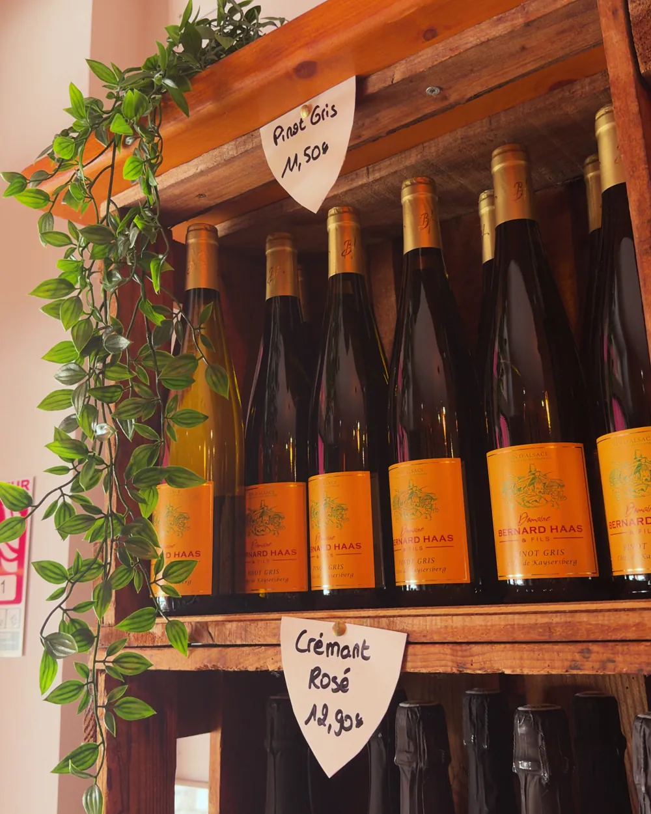

Wines from Domaine Bernard Haas & Fils
Pinot gris and pinot blanc from the Côtes de Kaysersberg, riesling and gewurztraminer from the Schlossberg Grand Cru. By the glass from €3.50, by the carafe or the bottle.
The bottles on our shelves are for sale to take away, too.
The wine list